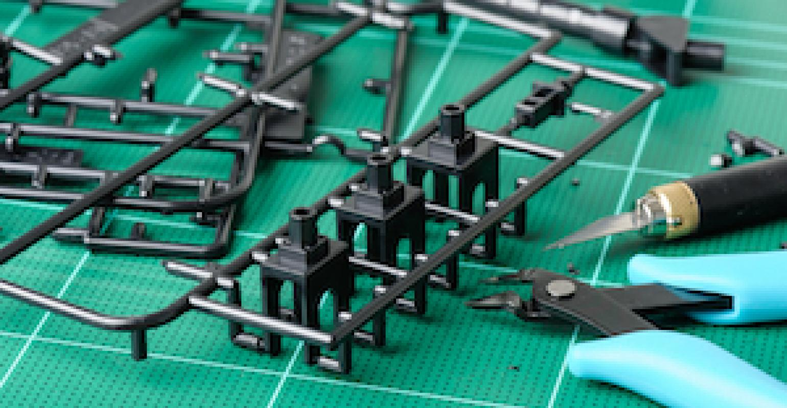

Pieces come on sheets called sprues
Model Building is the hobby of constructing scale models from boxed kits. They can include models of modern or vintage vehicles, such as cars or trains, or Science Fiction or Fantasy, such as spaceships or dragons. These kits are can be made from plastic, resin, metal, or wood. They can sometimes even be a combination of any of the four.
Tools Required
Another aspect of the hobby is the painting of constructed models. While some beginner kits may come pre-painted, most kits require painting. This may range from simply highlighting pieces that are basic colours to having to apply every layer of paint, from a base coat to highlighting and weathering.
Popular Paint Brands